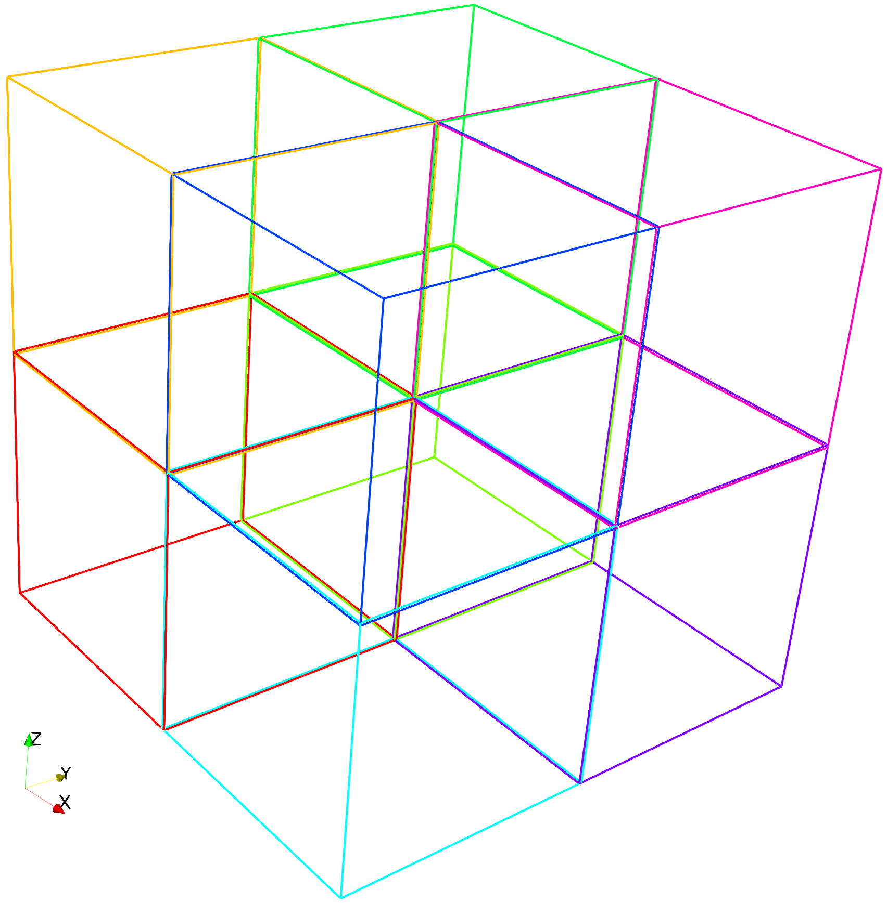
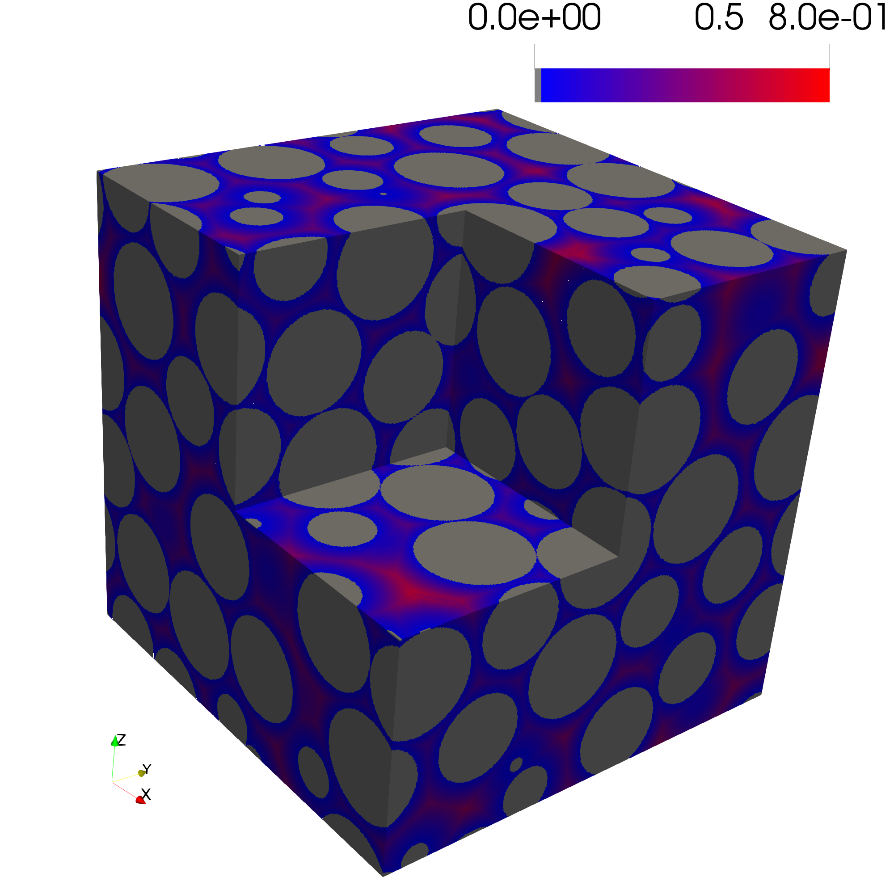
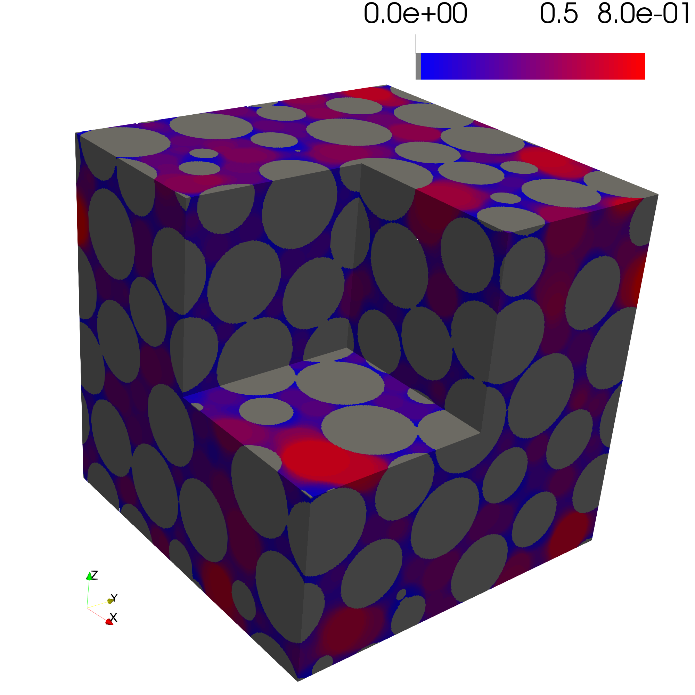
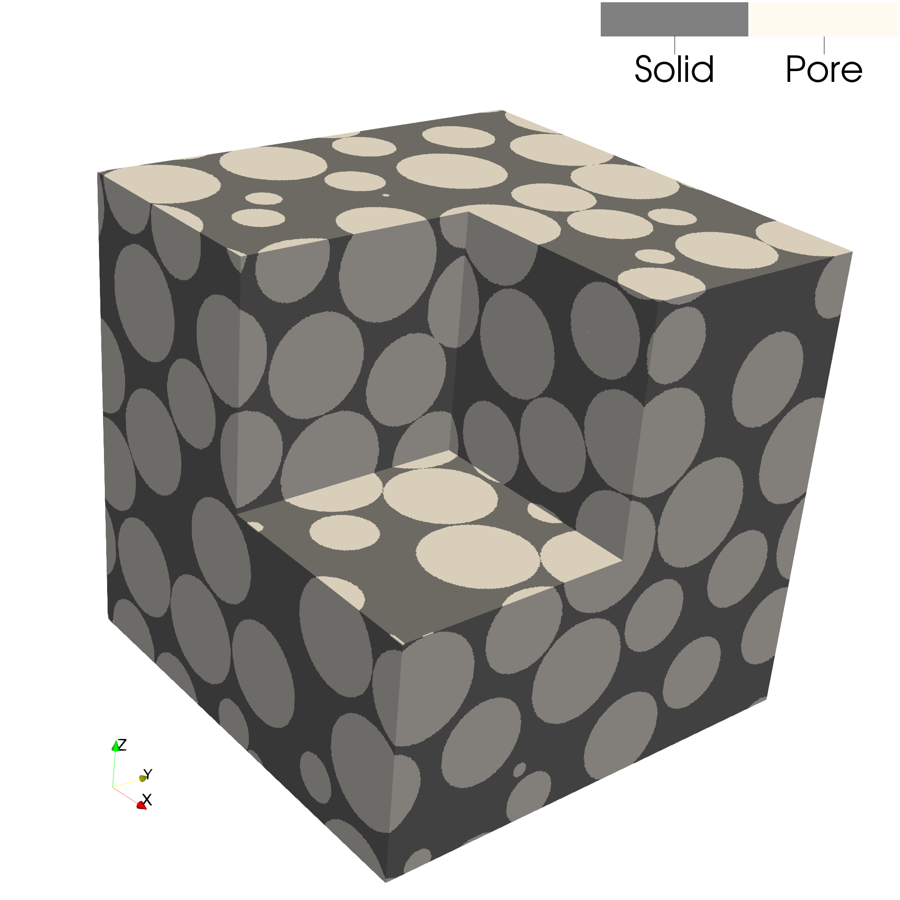
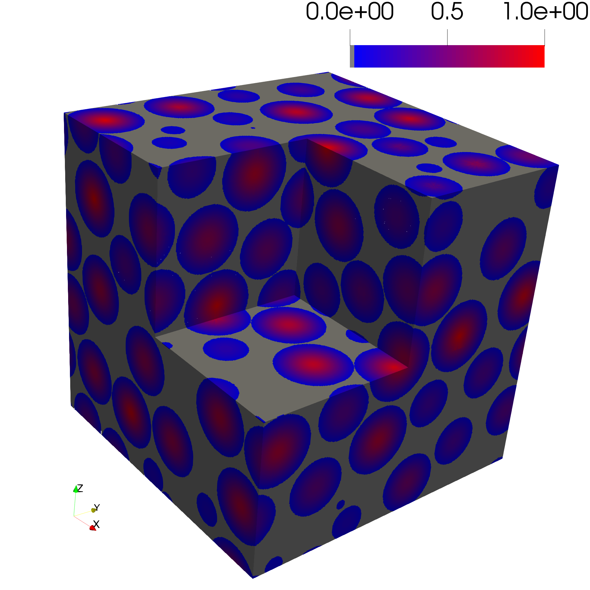
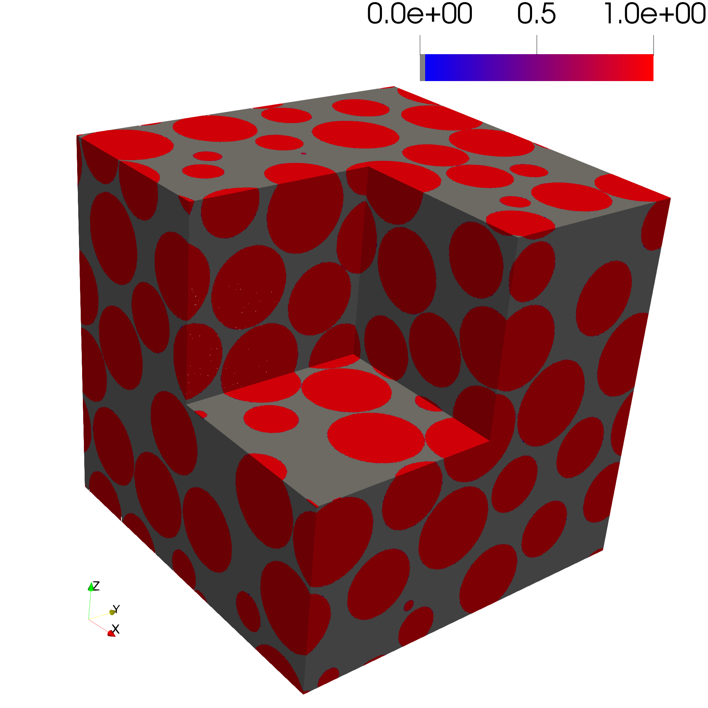
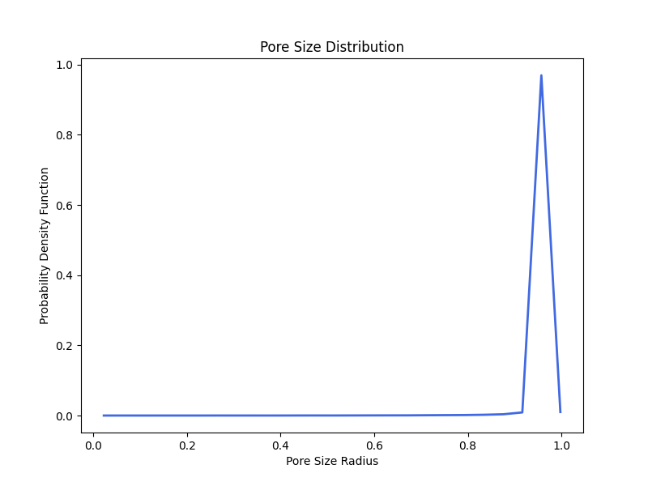

Euclidean Distance Transform and Pore Size Distribution of a Sphere Pack
This example demonstrates how to compute a Euclidean distance transform and a pore size distribution (PSD) of a sphere pack using PMMoTo.
To run this example with 8 MPI processes:
mpirun -np 8 python examples/sphere_pack_psd/sphere_pack_psd.py
Step 1: Import Modules
MPI is needed to determine the rank of each process.
from mpi4py import MPI
import pmmoto
Step 2: Load Sphere Pack Geometry
The sphere pack geometry file defines the simulation domain extents and the positions and radii of individual spheres. The format of the file is:
domain_x_min domain_x_max
domain_y_min domain_y_max
domain_z_min domain_z_max
sphere_1_x sphere_1_y sphere_1_z sphere_1_radius
sphere_2_x sphere_2_y sphere_2_z sphere_2_radius
sphere_3_x sphere_3_y sphere_3_z sphere_3_radius
...
The first three lines define the domain extents for each axis
Each subsequent line defines a sphere with:
Center coordinates: x, y, z
Radius: r
Example:
0.0 40.0
0.0 40.0
0.0 40.0
10.0 10.0 10.0 4.5
25.0 20.0 18.0 5.0
30.0 30.0 10.0 3.0
To initialize the spheres and domain box, the sphere pack geometry file is passed to the function read_sphere_pack_xyzr_domain.
sphere_pack_file = "examples/sphere_pack_psd/sphere_pack.in"
spheres, domain_box = pmmoto.io.data_read.read_sphere_pack_xyzr_domain(
sphere_pack_file
)
Step 3: Initialize Simulation Domain
To initialize PMMoTo, the following parameters must be specified for this example:
voxels: the number of voxels in each dimension for the image representing the porous structurerank: the MPI rank of the current processsubdomains: the number of subdomains in each dimensionbox: the physical size of the simulation domainboundary_types: the boundary conditions used for the images
comm = MPI.COMM_WORLD
rank = comm.Get_rank()
voxels = (401, 401, 401)
subdomains = (2, 2, 2)
boundary = pmmoto.BoundaryType.PERIODIC
boundary_types = (
(boundary, boundary),
(boundary, boundary),
(boundary, boundary),
)
sd = pmmoto.initialize(
voxels=voxels,
rank=rank,
subdomains=subdomains,
box=domain_box,
boundary_types=boundary_types,
)
The domain is decomposed into eight subdomains and is shown below. By default, each subdomain shares 1 voxel with its neighbor subdomains.
{kind=link}
Step 4: Generate the Porous Media
To generate the porous structure for a sphere pack, the function gen_pm_spheres_domain is called with the Subdomain object and spheres as inputs. The invert parameter determines whether the spheres are considered solid (i.e., 0) or pore space (i.e., 1). In this example, we treat the spheres as solids by setting invert=False.
pm = pmmoto.domain_generation.gen_pm_spheres_domain(sd, spheres, invert=False)
The pore space is shown below where the subdomain with rank = 5 has been omitted:
{kind=link}
Step 5: Perform a Euclidean Distance Transform
The Euclidean distance transform computes the distance from every pore voxel to the nearest solid voxel and is central to many morphological analyses. The function edt is called and the image of the porous structure PorousMedia.img and the Subdomain are passed in. The Euclidean distance transform implementation in PMMoTo is an extension of the work of [4].
dist = pmmoto.filters.distance.edt(pm.img,sd)
The distance transform of the sphere pack is shown below.
{kind=link}
Step 6: Determine the Pore Size Distribution
The pore size distribution of a porous structure represents the largest sphere that can fully fit at each pore voxel. The function pore_size_distribution generates an image representing this distribution. A list of sphere radii can be passed to the function. If radii is not specified, a Euclidean distance transform is performed, and a list of radii is generated spanning from the image resolution up to the maximum observed distance, controlled by num_radii. Additionally, by setting inlet=True, the pore size distribution is computed only for voxels connected to the inlet.
psd = pmmoto.filters.porosimetry.pore_size_distribution(
sd, pm, num_radii=25, inlet=False
)
The pore size distribution of the sphere pack is shown below.
{kind=link}
Step 7: Generate PSD Plot
To generate a histogram of pore sizes, the function plot_pore_size_distribution is called and the file_name, Subdomain object, the pore size distribution image, and plot_type as either "pdf" or "cdf" are specified.
pmmoto.filters.porosimetry.plot_pore_size_distribution(
"examples/sphere_pack_psd/pm", sd, psd, plot_type="pdf"
)
{kind=link}
Step 8: Analysis on Inverted Pore Space
As a check, the spheres will be considered the pore space. To accomplish this, a new PorousMedia object is created and invert=True inverts the porous media so that the spheres represent the pore space. The Euclidean distance transform can also be calculated and accessed by PorousMedia.distance. The pore size distribution of the inverted pore space is also determined.
invert_pm = pmmoto.domain_generation.gen_pm_spheres_domain(sd, spheres, invert=True)
invert_psd = pmmoto.filters.porosimetry.pore_size_distribution(
sd, invert_pm, num_radii=25, inlet=False
)
invert_distance = invert_pm.distance
pmmoto.filters.porosimetry.plot_pore_size_distribution(
"examples/sphere_pack_psd/inverted_pm", sd, invert_psd, num_radii=25, inlet=False
)
The sphere pack consists of spheres with a uniform radius of 1.0 and the inverted pore space is:
{kind=link}
The Euclidean distance transforms determines the distance to the nearest solid voxel so the centers of every pore should equal 1.0
{kind=link}
The pore size distribution image should equal 1.0 for every pore voxel.
{kind=link}
The pore size distribution correctly estimates that maximum radius of 1.0 with some numerical artifacts that may be resolved with improved resolution (i.e., more voxels).
{kind=link}
Step 9: Save Images
This will save both the original and inverted pore space images, as well as the Euclidean distance transforms and pore size distribution images.
pmmoto.io.output.save_img(
file_name="examples/sphere_pack_psd/image",
subdomain=sd,
img=pm.img,
additional_img={
"psd": psd,
"dist": dist,
"invert_pm": invert_pm.img,
"invert_dist": invert_distance,
"invert_psd": invert_psd,
},
)
Output
The expected output from a successful run is:
image.pvtiand a folderimage_procwith eight.vtifiles which can be opened in ParaviewTwo
.pngfiles of a pdf of the pore size distribution.
The code used to generate the plots in this example is located at examples/sphere_pack_psd/plot_sphere_pack_psd.py and must be run with pvpython, ParaView’s Python interpreter.